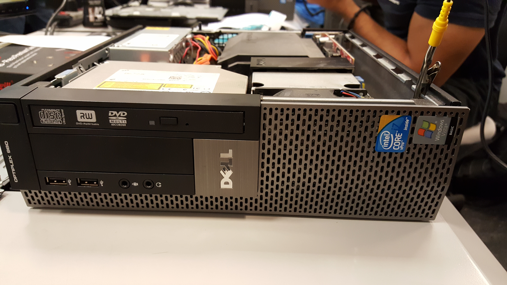
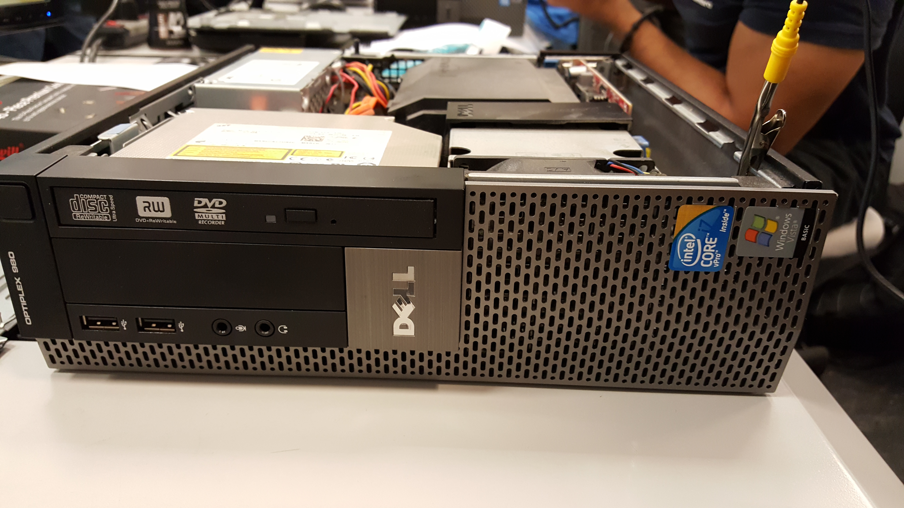
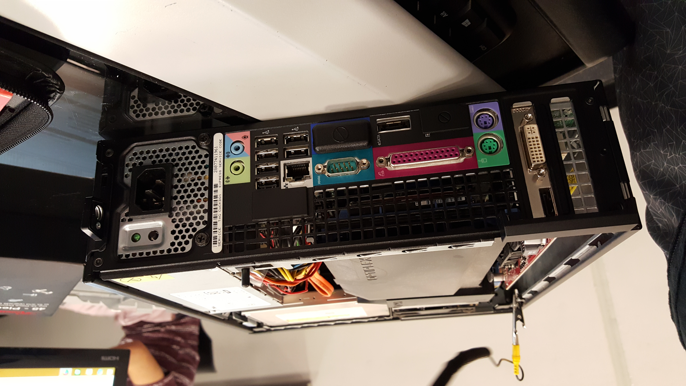
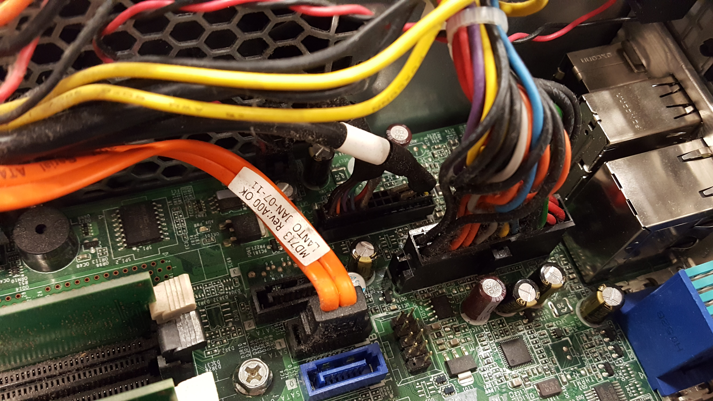
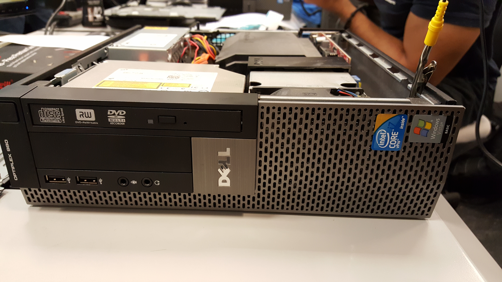
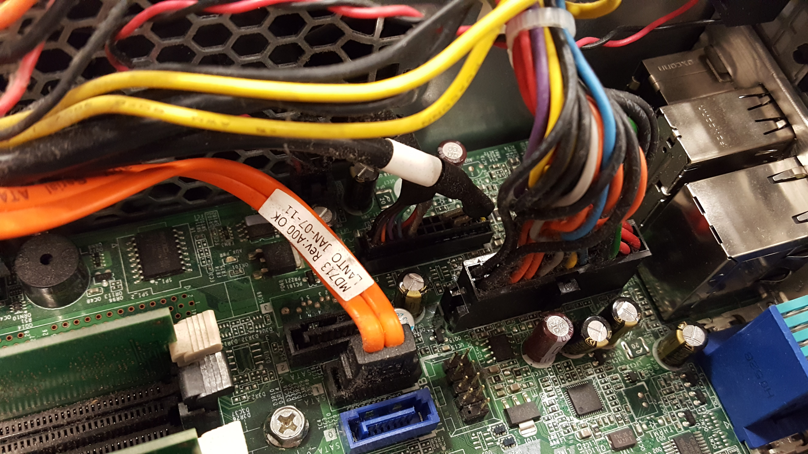
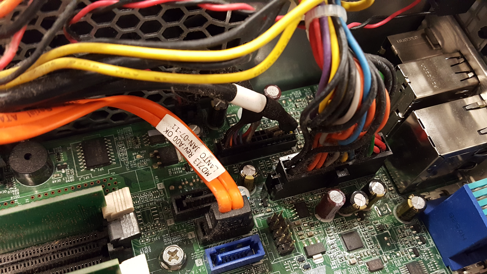
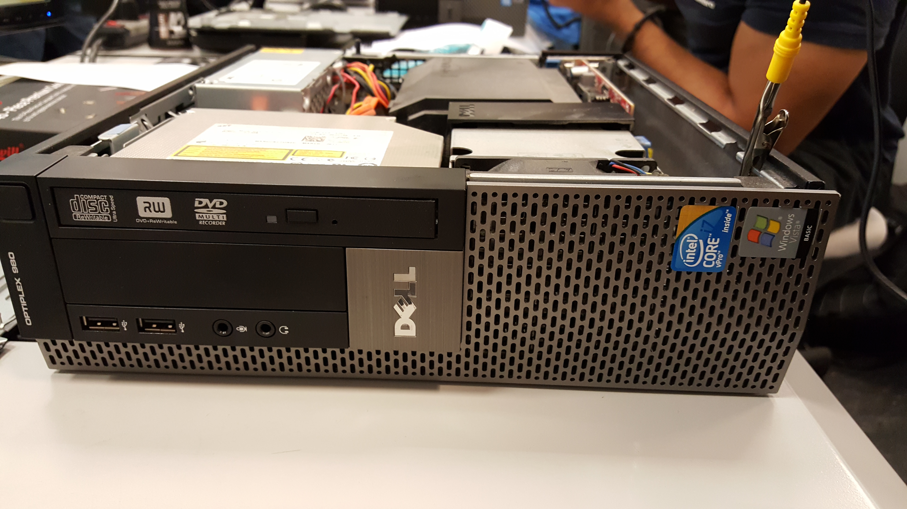
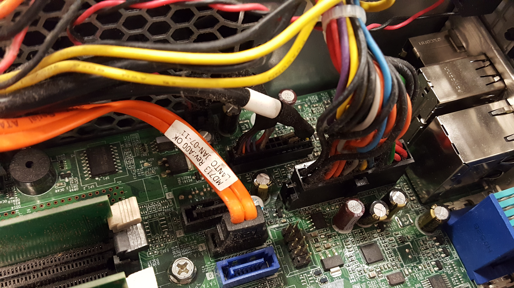

 





To the right are pictures that I have took myself. These pictures show the time I took apart a computer tower. Unfortunately, I was able to build it back together because the tower did not work before it was disassemble. It was a fun experience and very interesting to people who haven't took apart a computer tower before. I am a hands on learner so being able to see what the inside of a computer tower looks like was interesting. I am really into technology and like to learn about the components of computer, tower, printer, etc.


The video below shows how to build a computer. It is a step by step video that will show some of the basic parts of a computer tower. I wish I would have took a video of my own but I am still in the learning process of building one so I am working on it!